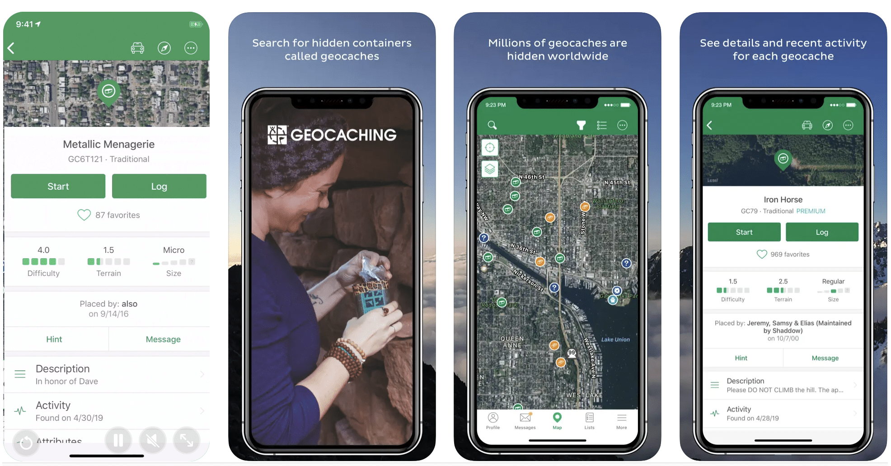

Geocaching

Qu’est ce que geocaching ?
Geocaching est une chasse au trésor moderne qui utilise une application mobile avec un GPS intégré pour trouver des caches dissimulées partout dans le monde. Ces conteneur, parfois remplis d’objets ou d’un journal de bord, permettent d’explorer des lieux méconnus tout en partageant une aventure avec une communauté.
Fonctionnalité 1: Recherche de geocaches
Fonctionnalité 2: Statistiques et badges
Fonctionnalité 3: Communauté et chats
Design actuel
Nous avons testé l’application geocaching dans la ville de Nantes et nous avons essayé de trouver 10 caches. Finalement, nous en avons trouvé que 8 caches au cours de cette session. Nous ne les avons pas trouvé car certaines caches sont déplacées ou emportées. Nous avons trouvé que c’était un moyen amusant de découvrir une ville surtout quand cette aventure est vécue en petit groupe.
source: www.codeur.com
UI
+ Design épuré
+ Icones claire et intuitives
- Surcharge d’information
- Tailles des éléments
UX
+ Navigation fluide
+ personnalisation
- Frustrations liées au caches (caches perdues ou volées)
- Accessibilité limité (fonctionnalités premium)
Refonte de l'App
Notre volonté était de rendre l’expérience plus ludique et sociale pour les utilisateurs. Nous avons créé une partie communautaire avec la possiblité de créer un groupe entre amis, avec une compétition en interne et entre toutes les équipes proches de vous. Nous avons aussi créé des défis personnels. Afin d’ètre sur que les joueurs ont biens trouvé une cache, nous avons ajouté un système de QR code qui doit être scanné par le chercheur.
Choix graphiques

Nous avons choisi de constituer nos composants avec des icônes arrondies et pleines, souvent de couleur blanche. Nous avons ensuite ajouté une ombre d’une couleur plus foncée que le fond du bouton. Cette ombre permet de donner du volume aux icônes sans compliquer la lisibilité pour l’utilisateur. Nous avons également fait le choix de faire seulement un Light Mode, ce design permet une meilleure visibilité dans les milieux extérieurs.
L’application adopte un design moderne et épuré, avec des couleurs sobres et des touches d’orange pour les éléments interactifs.
Nous avons choisis la police Jakarta Sans pour sa modernité et sa lisibilité.
Afin de rendre l’expérience encore plus immersive et authentique, chaque cache contiendrait désormais un QR code unique que les utilisateurs pourraient scanner directement via la fonction dédiée dans leur profil. Ce scan servirait à confirmer qu’une cache a été trouvée, évitant ainsi toute déclaration arbitraire et renforçant l’aspect exploratoire du Geocaching.
Tandis que les niveaux, badges et classements renforcent l’aspect ludique et compétitif, cette fonctionnalité assurerait une validation fiable des découvertes.
Maquettes


L’utilisateur est désormais prêt à découvrir le plein potentiel du concept de Geocaching !